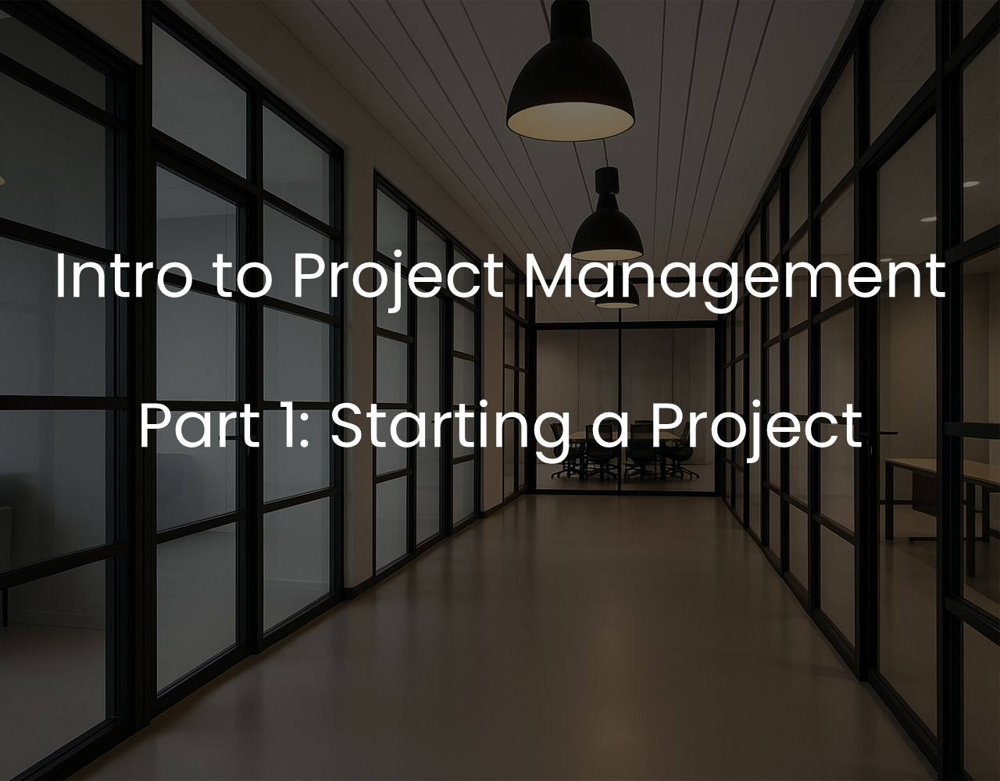

Introduction to Project Management | Part 1: Starting a project
Understanding the foundations of project management: what a project is, the role of the project manager, and how to define a project for success.

As we progress in our careers and gain valuable experiences, we often find ourselves thrust into roles we knew little about, tasked with delivering value to our companies, clients, and even ourselves. Regardless of our current positions, the need to plan and oversee projects frequently arises. We strive to excel in our responsibilities, usually learning through the challenges we face. In our pursuit of professional growth, knowledge, guidance, and support become our allies.
In this series, I'll guide you through the world of project management, breaking it down into five essential parts to make the journey more manageable. This will follow closely Richard Newton’s ‘Project Management Step by Step’ [1], which provides a clear and concise step-by-step process on how to structure, monitor and finish a project. I will use the book as a guide, coupled with my own personal experience in project management.
- Part 1: Starting a Project: Discover the core concepts of project management, including what defines a project, the role of a project manager, and the dimensions that shape your projects.
- Part 2: The Project Plan: Learn how to create a comprehensive project plan that serves as your roadmap to success, ensuring your projects stay on track.
- Part 3: Project Execution: Explore strategies for effectively executing your projects, managing teams, and overcoming unexpected challenges.
- Part 4: Project Delivery: Navigate the final stages of project management, ensuring that your projects are successfully delivered and meet all objectives.
- Part 5: Templates: Access a valuable resource in the form of templates and tools, simplifying your project management tasks and saving you time and effort.
Let's start on this journey of project management together, starting with Part 1: Starting a Project. Click on the links above to navigate to the specific part you're interested in, or follow the series sequentially to gain a comprehensive understanding of project management best practices.
Before we get into the process it is important to understand what a project is, what the role of a project manager is and how does a typical life-cycle of a project go.
What is a project?
The Project Management Body of Knowledge (PMBOK Guide 5th edition) [2] defines the project as "a temporary endeavor undertaken to create a unique product, service, or result."
Breaking this down, we see that a project has a finite lifespan with a start and end date and a goal to deliver something in the end, whether that is a product, service, or result.
A typical life-cycle of a project would be:
- Understanding and specifying why you are doing the project
- Planning the project and understanding how it would need to be executed
- Executing the project and creating the various deliverables based on your plan
- Ensuring that the deliverables meet the original specifications
- Closing the project down
What does a project manager do?
The main role of the project manager is to structure, monitor, and ensure that a project is successfully completed within the required time and cost. This includes knowing the purpose, planning, managing, and completing the project.
Dimensions of a project
A project has a goal, deliverables, quality standards, timeline, budget, and associated risks. For example, a personal project to change your car’s oil can be broken down as follows:
- Scope: Change the oil in the car.
- Quality: Choose between a cheap or premium oil brand.
- Time: 1 hour at a garage vs. 3 hours by yourself.
- Cost: €20–50 depending on oil type and method.
- Risk: Potential errors if doing it yourself; time overruns or budget issues.
There are many project management methodologies, depending on the context. For this series, we’ll use the traditional waterfall model to introduce key concepts step-by-step.
Project Definition
You cannot start a project without knowing why you need to do it. This is done by answering these key questions:
Let’s assume our agency is updating its website. Ask:
- Why? Redesign our company’s website.
- What will you have at the end? A modern website using latest tech.
- Any additional deliverables? A training manual for future devs.
- Anything excluded? The logo will remain unchanged.
- Overlaps with other projects? Template from a previous project may be reused.
- Assumptions? The designer may be unavailable for a week.
- Problems? A junior dev needs on-the-job training.
- Conditions? Tight deadline set by the client.
Once defined, the project definition should be agreed upon by all stakeholders to ensure alignment and prevent future misunderstandings.
Conclusion
In this first part, we've laid the foundation for understanding project management, from definitions to key roles and components. A solid Project Definition helps set the course for everything that follows.
Next, we’ll continue with Part 2: The Project Plan.
References
[1] Richard Newton - Project Management Step By Step, Pearson Education Limited
[2] PMI - A Guide to the PMBOK
[3] Wrike Inc - Project Management Methodologies
[4] Anna Mar - 130 Project Risks
[5] Wrike Inc - Project Management Glossary